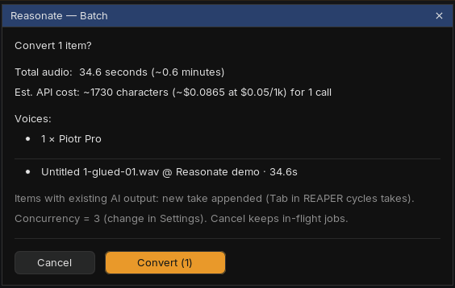
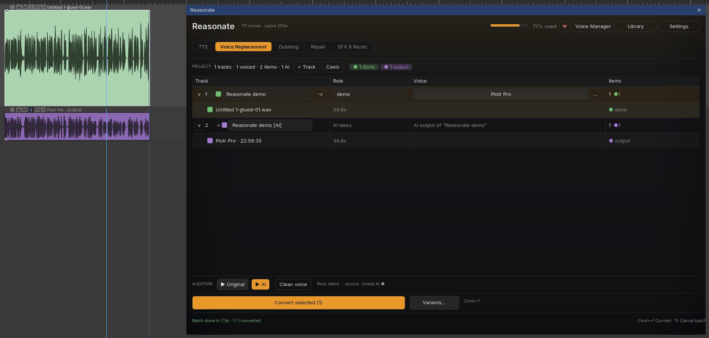
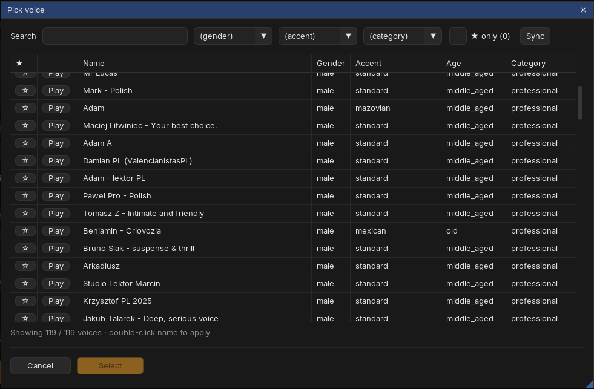
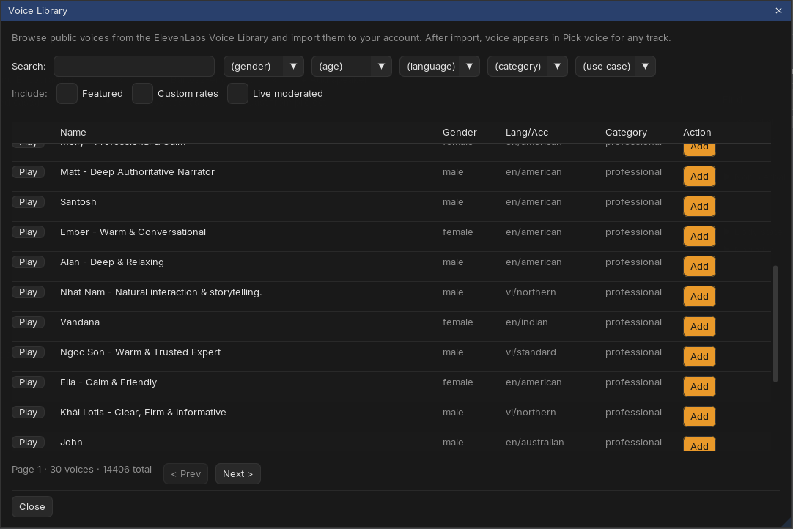
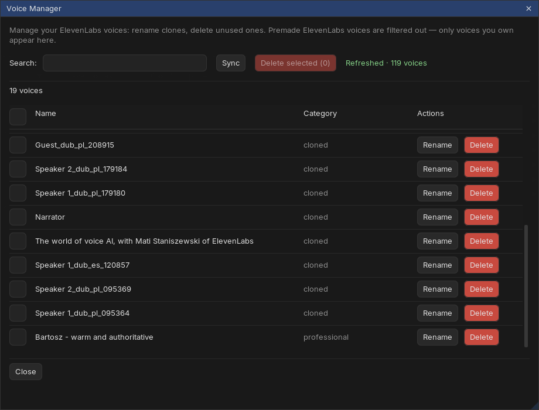

Core workflowFrom recording to new voice
-
Give the track a voice
Every track in the table has a Pick voice... button. It opens the voice picker: search, filter, star favorites, and press ▶ to hear a preview. Double-click to assign.
Optionally type a role for the track (like "narrator" or "guest"). Roles power Casts: save the current role-to-voice mapping once, apply it to any future project with two clicks.
-
Select items and convert
Select one or more audio items in REAPER (Cmd+click for multiple), then press Convert selected (N) or Cmd+Enter. A confirmation dialog shows exactly what will happen first: total audio length, estimated cost, and which voices are used.
-
Let the batch run
Conversions run in the background, three at a time. The interface stays responsive; progress lives in the batch dialog and in the footer activity chips. Cancel drops the queue but lets in-flight conversions finish, so you never pay for audio you do not receive.
-
Audition and compare
Click any item row and use the audition strip: ▶ Original vs ▶ AI. If an item has several takes, cycle them right there, or select the item in REAPER and press Tab.


Output goes to a separate [AI] track, created as a folder child of the source track (a flat layout is available in Settings). The [AI] rows in the table are read-only on purpose - they always tell you which source they belong to.
IteratingRe-convert, variants, takes
Reasonate tracks what each conversion was made from. If you convert the same item again with the same voice and settings, it is a free cache hit and gets skipped. Change the voice, the item audio or the voice settings, and it re-renders - the new result is appended as a new take, so nothing you liked is lost.
Variants
Want options? Select one item and press Variants.... Reasonate renders N takes (you choose how many) with different random seeds; each take is a slightly different read. Cycle takes with Tab and keep the winner.
Per-track voice settings
The ... menu on each track opens Voice settings: stability, similarity, style and speaker boost overrides for that track only. Useful when one voice needs a steadier read than the rest.
Your libraryFinding and managing voices
Voice picker
Wherever you assign a voice - a track's Pick voice..., a TTS speaker, a dubbing character - the same picker opens: search, gender / accent / category filters, star favorites (with a favorites-only filter), and Play previews. Double-click a name to apply it.

Two header tools keep your voice collection in shape, in every mode:
Voice Library
Library browses the public ElevenLabs collection (thousands of voices) with search and filters for gender, age, language, category and use case. Play previews a voice; Add imports it into your account, where it immediately shows up in Pick voice... everywhere.

Voice Manager
Voice Manager lists only voices you own - clones and imports - with rename, delete and batch delete. Dubbing and Repair create clones as you work, so a periodic cleanup keeps your voice slots free.

CaptureRecord straight into the workflow
You can record source material without leaving Reasonate. In a track's ... menu choose ● Record: the track arms, an input meter appears in the row, and an optional pre-roll counts you in. Press stop, and the fresh item is ready to convert.
Input, pre-roll length and monitoring live in Settings → Voice Replacement.
CleanupVoice Isolator
Noisy source? Two options:
- Per track - toggle Voice Isolator in the track's ... menu. Every conversion on that track first strips background noise, then converts the cleaned audio. The row shows a small dot when active.
- One-off - the Clean voice button in the audition strip runs the isolator on the selected item without converting anything, so you can hear the cleanup by itself.
Voice Isolator is a separate ElevenLabs call (1000 credits per minute of audio). Its results are cached like everything else, so re-running a conversion does not clean the same audio twice.
Edge casesLong items and limits
ElevenLabs speech-to-speech accepts up to 5 minutes per call. Longer items are handled for you: Reasonate splits them at silences, converts the chunks, and lays the results out as a grouped set of items that plays seamlessly. If you re-convert, finished chunks come from cache and only missing ones are rendered.
Items over 290 seconds with a modified playrate or take FX cannot be auto-chunked yet and are rejected with a clear message.
Bigger sessionsRoles, filters, colors
- Filter bar - with several roles or six plus tracks, chips with role counts and a search box appear above the table. Filtering never hides anything silently: a caption always says "showing N of M".
- Status colors - items are tinted by state (queued, converting, done, error...) so a glance at the timeline tells you where the batch is. Pick your own colors anytime; Reasonate respects manual colors and stops auto-tinting that item.
- Stats strip - the row above the table counts tracks, voiced tracks and items, with status pills for anything pending or failed.